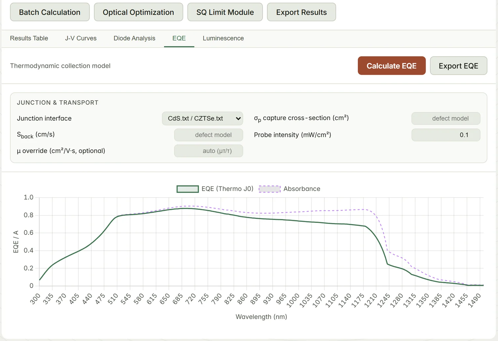
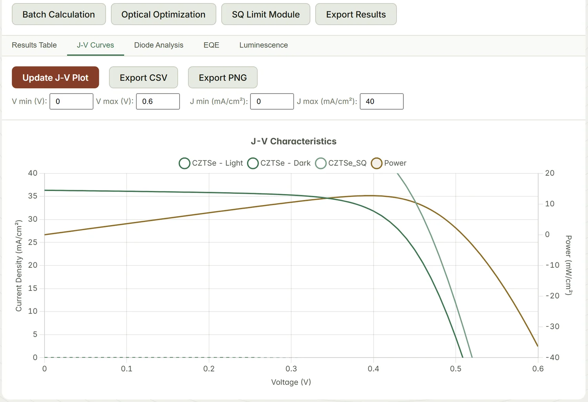

Overview
SOLEY is a solar cell simulator which combines Transfer Matrix Method optics with an extended detailed balance model of the device. Starting from the layer stack and the optical constants of each material, it calculates the absorption and generation profiles, then the J-V curve, the EQE and the luminescence of single-junction and multijunction devices, without having to solve the full drift-diffusion system.
It is free for academic use and is described in Solar RRL (2025); it is meant as a complement to drift-diffusion tools such as SCAPS-1D, in particular for quick design screening and for checking the thermodynamic consistency of a result.
- 0–89°
- angle of incidence, TE, TM or unpolarised
- 0.001–46,300
- suns of injection level
- 2T · 3T · 4T
- tandem configurations
- 6
- junctions at most in one device
What SOLEY covers
- Coherent and partially coherent TMM optics, with scattering and light trapping models
- An extended detailed balance model with radiative, SRH and Auger recombination
- A thermodynamic transport model for the EQE and the J-V curve of transport-limited absorbers
- Tandem and multijunction devices in 2T, 3T and 4T configurations
- Bulk and interface defects described by their microscopic parameters
- Photoluminescence and electroluminescence spectra, and bifacial devices

EQE of a CZTSe thin film from the transport model of version 2.1 (green), compared with the absorbance of the absorber (dashed).
Next: Download
Download SOLEY 2.1.1
SOLEY 2.1.1 is available for Windows, macOS and Linux. Every version is archived on Zenodo with its own DOI, so that a result can always be reproduced with the exact version which produced it, and the user manual is downloaded separately from the same record.
User manual (PDF) · All versions on Zenodo
What is included
- The SOLEY installer with the full application
- Example device structures, in the installation directory (Program Files/SOLEY/ on Windows)
- A sample database of optical constants
- Configuration files describing the methods used (optics.txt, global_parameters.txt, outputs.txt)
Requirements
- Windows 10 or 11, macOS 10.15 or later, or Ubuntu 20.04 or later
- 4 GB of RAM at least, 8 GB recommended
- 500 MB of free disk space and a display of at least 1280 × 720
Next: Quick start
Quick start
Installation
- Download the installer for your operating system.
- Run it and follow the installation steps.
- Launch SOLEY from the applications menu or the desktop shortcut.
On macOS, the first launch may be blocked by Gatekeeper. In that case, right-click on the application and select Open, or allow it in System Settings under Privacy and Security.
A first simulation in five steps
- Open an example structure: File, Open, then
perovskite_silicon_tandem.soley.
- Click Calculate TMM in order to compute the absorption profiles.
- Go to the Device Physics tab and review the recombination settings.
- Open Tools, J-V Characteristics, and select the illumination conditions.
- Export the results with File, Export, in CSV or PNG format.
The usual workflow
1. Define the layer stack (materials and thicknesses)
2. Assign the optical constants (n, k data)
3. Run the TMM calculation
4. Set the absorber parameters (Eg, defects, ...)
5. Choose the illumination (spectrum, angle, intensity)
6. Run the electrical model (J-V, generation, PL, ...)
7. Analyse and export the results
Example files
single_junction_silicon.soley: a basic c-Si deviceperovskite_silicon_tandem.soley: a 2T perovskite/silicon tandemCZTS.soley and CZTSe.soley: sulphur and selenium kesterites
The user manual describes every panel and parameter in more detail.
Next: Optics
Optics
The optical part of SOLEY is a Transfer Matrix Method engine for stratified media, completed by scattering and light trapping models for rough or textured interfaces.
- Transfer Matrix Method
- Coherent and partially coherent calculations, with thick incoherent layers such as glass substrates handled by the method of Katsidis and Siapkas; direct and diffuse (Lambertian) illumination; angle of incidence from 0 to 89° with TE, TM or unpolarised light; generation profiles integrated over the spectrum.
- Scattering and light trapping
- Debye-Waller factors for a roughness of the order of the wavelength, geometric light trapping for a roughness much larger than the wavelength (pyramids, for example) including the bounces between facets, and a hybrid treatment of absorber and non-absorber interfaces. The scattering mode is chosen per absorber, and the models were validated against RCWA calculations in version 2.1.
- Materials and spectra
- Complex refractive index (n + ik) for every layer, Bruggeman effective medium approximation for composite layers, custom input spectra (AM1.5G, indoor sources and others), and an injection level from 0.001 to 46,300 suns.
- Bifacial devices
- Rear-side TMM with angular integration, three illumination modes (Auto, Full Environment and Custom spectrum), wavelength-dependent albedo (presets for grass, sand, concrete, snow and water, flat value or Gaussian profile), bifacial gain per absorber, and characterisation following IEC 60904-1-2.
Next: Device physics
Device physics
The electrical part of SOLEY is built on the detailed balance principle, extended in order to include the non-radiative losses and, since version 2.1, the carrier transport in the absorber.
- Extended detailed balance
- Shockley-Queisser limit, radiative recombination following van Roosbroeck and Shockley, SRH recombination in the bulk and at the interfaces, Auger recombination depending on temperature and bandgap, all computed from the TMM absorption spectra.
- Thermodynamic transport model
- The EQE and the J-V curve are computed with a depth-resolved carrier collection, validated against full drift-diffusion (SCAPS) calculations. The collection model (off, Hecht or full transport) is selected per absorber, so that ideal and transport-limited layers can be mixed in the same stack.
- Multijunction devices
- 2T tandems solved directly from the diode equations, with current matching and automatic identification of the limiting subcell; 3T devices in the common-Z configuration, with a distributed network model for the sheet resistance; 4T devices; up to six junctions, including the luminescent coupling between subcells.
- Defects
- Bulk and interface defects are given by their microscopic parameters (Nt, σn, σp) and their activation energy, and SOLEY calculates the corresponding saturation current J₀ for each absorber.
- Photon recycling
- Implemented through the optical reciprocity relation of Rau: the escape probability is obtained from the diffuse absorptivity, giving the effective radiative saturation current J₀,rad and the photon coupling currents between subcells.
- Temperature-dependent bandgap
- A Varshni or custom Eg(T) law is applied consistently to the optics (n, k) and to the device physics.
Next: Analysis tools
Analysis tools

- J-V characteristics
- Dark and illuminated curves, custom voltage sweep, overlay of several absorbers and CSV export. The maximum power point is refined by a parabolic fit around the maximum, so that Vmpp, Jmpp and Pmax do not depend on the voltage step.
- Luminescence
- Photoluminescence and electroluminescence spectra from the van Roosbroeck-Shockley relation, with variable excitation wavelength and power, applied voltage, TMM absorptivity and quasi-Fermi level splitting.
- Shockley-Queisser calculator
- Theoretical efficiency limits including Auger recombination, series and shunt resistances, temperature and concentration.
- Generation profile export
- TMM generation profiles exported in a format which can be read by SCAPS, with parallel computation for faster export.
- Voltage-dependent collection
- Hecht equation based on the mobility-lifetime product (μτ), with the drift length and the collapse of the field under forward bias.
- Diode analysis
- Local ideality factor nid(V) and differential resistance Rdiff(V), in order to separate the shunt, recombination and series resistance regimes.
- Theoretical hints
- Each function of the interface comes with a short explanation of the physics behind it.
Next: Gallery
Gallery
Optical modelling of a perovskite/silicon tandem: the layer stack, with the roughness of every interface, and the reflection, transmission and absorption of each layer calculated with the TMM.
EQE of a CZTSe thin film from the thermodynamic transport model (green), below the absorbance of the absorber (dashed), the difference being the collection loss due to transport.
J-V characteristics of the same CZTSe device, in the dark and under AM1.5G, with the power curve and the Shockley-Queisser reference at the same bandgap.
Results table with the PV parameters of several devices, including the subcells of 2T, 3T and 4T tandems.
Diode analysis of the CZTSe device: local ideality factor and differential resistance as a function of the voltage.
Photoluminescence spectrum of a FAPbI3 absorber, calculated from its TMM absorptivity with the van Roosbroeck-Shockley relation.
Shockley-Queisser calculator, here with a sweep of the bandgap showing the thermalisation, transmission and recombination losses.
The example files included in the installation are the easiest way to get used to the workflow, before building your own structures.
Next: Method
Method
Optical model
The optics are solved with the Fresnel-based Transfer Matrix Method for stratified media, which gives the exact solution of Maxwell's equations in a planar geometry, including the interference in thin films. Partial coherence is treated by convolution or sampling, diffuse light by angular integration, and rough or textured interfaces by the three scattering models described in the Optics section.
Jimenez et al., Solar Energy Materials and Solar Cells 251, 112109 (2023). doi:10.1016/j.solmat.2022.112109
Electrical model
The current density is solved at the junction voltage Vj = V + J Rs + Δv, where Δv is the additional drop across a heterointerface barrier when one is defined:
The photocurrent Jph depends on Vj when a collection model (Hecht or full transport) is selected for the absorber, and is constant otherwise.
This approach does not require solving the Poisson and drift-diffusion equations, which makes the iteration much faster for design screening, keeps a direct link between the optical and the electrical model, and makes it possible to check the thermodynamic consistency of a device.
Jehl Li-Kao, Solar RRL (2025). doi:10.1002/solr.202500345
Defect model
The microscopic trap parameters are converted into a saturation current following the formulation of Scaffidi et al. For the bulk and the interface contributions:
and the total SRH saturation current, with the activation energy Ea:
Scaffidi et al., Newton 1(8), 100198 (2025). doi:10.1016/j.newton.2025.100198
Next: Roadmap
Roadmap
Planned
- Intermediate band solar cells
- Hot-carrier devices, with non-thermal carrier distributions
Known limitations
- The Bruggeman mixing of layers can still cause some layer indexing issues, and should be used with caution.
- For small datasets, the parallel processing overhead can make a calculation slower than in serial.
- The scaling of the interface on macOS has not been tested on every hardware variant.
- The built-in database of optical constants is limited, so that in most cases the n and k files have to be provided by the user.
The SOLEY suite
SOLEY Core is the academic part of a wider SOLEY suite, which is being developed further for other applications of photovoltaics. An online demonstration can be tried at demo.soley-pv.com.
Next: Release notes
Release notes
Version 2.1.1 August 2026
The largest update of SOLEY so far.
- Thermodynamic EQE model. The EQE is now computed from a thermodynamic model with depth-resolved carrier collection, validated against full drift-diffusion (SCAPS) calculations, and the Voc deficit is quantified with the reciprocity model of Rau.
- Transport in the J-V curve. The same transport treatment now drives the J-V curves and the PV parameters, which is useful in particular for transport-limited thin films.
- Temperature-dependent bandgap. A Varshni or custom Eg(T) law is applied consistently to the optics and to the device physics, and the temperature is carried into the results table and the CSV export.
- Multijunction transport. The thermodynamic model, the EQE and the depth-resolved J-V now extend to 2T, 3T and 4T tandems, including the luminescent coupling between subcells.
- Collection model per absorber. Off, Hecht or full transport can be selected for each absorber.
- Light scattering and trapping. The roughness and light trapping logic has been refined further and validated against RCWA.
- Presets and optics. The material presets now use realistic mobilities and collection models, and the TMM and optical caching were reworked for noticeably faster repeated runs.
- Interface. A cleaner interface with unified light and dark themes.
Version 1.9.8 · May 2026
- Linux build. The executable now bundles Qt-WebEngine, so that it also opens on distributions without the system packages, at the cost of a larger download.
- 2T solver. The interpolation-based combiner was replaced by a direct solution of the diode equations in every code path (Device tab, J-V tab and headless calculation).
- Maximum power point. A three-point parabolic refinement around the maximum, so that Vmpp, Jmpp and Pmax no longer depend on the voltage grid.
- Scattering mode per absorber. A layer-level choice between Flat, Debye-Waller and Geometric replaces the previous global heuristic; older .soley files are migrated automatically.
Version 1.9.7 · April 2026
Bug fix release: custom optical material paths were lost during the second loading pass of a project file, which caused missing absorber layers.
Version 1.9.6 · March 2026
- TM polarisation. Corrected the Poynting vector normalisation for TM polarisation, so that generation profiles through glass superstrates (perovskite/silicon tandems, for example) are now correct for both polarisations.
- Numerical stability. An overflow guard in the diode equation solver for extreme series resistances.
- TMM cache. The optical cache is no longer invalidated by mistake when the Bruggeman approximation merges layers.
- Results export. The CSV export was rewritten and now handles multijunction devices, with the PV parameters, J-V curves and diode analysis of each subcell.
- Project files. .soley files now store canonical material paths, so that they can be moved between machines.
Version 1.9.5 · February 2026
- 3T common-Z tandems. A distributed network model with sheet resistance and cell width replaces the lumped approximation, with a robust maximum power point search for every coupling regime.
- Photon recycling. Escape probability and radiative coupling between subcells.
- Mixed coherent and incoherent TMM. Stacks with thick layers such as glass substrates are now handled with the method of Katsidis and Siapkas (2002).
- Multi-bounce geometric light trapping. The reflectance of textured surfaces now includes the bounces between facets (Campbell and Green, 1987).
- Saving and loading. Many parameters which were lost or mixed between presets are now saved correctly, and three loading paths were merged into one.
Version 1.9 · February 2026
- Photon recycling. First implementation through the optical reciprocity relation of Rau, giving the effective radiative saturation current and the photon coupling currents in multijunction devices.
- Layer labelling. Fixed a serious bug where moving or removing a layer corrupted the layer labels, and therefore the optical and device results.
Version 1.8.1 · January 2026
- macOS builds are now distributed as .dmg disk images.
- Bifacial characterisation following IEC 60904-1-2, with configurable rear irradiance, bifaciality coefficients and bifacial gain.
Version 1.8 · January 2026
- Bifacial simulation. Rear-side TMM with angular integration, three illumination modes, wavelength-dependent albedo and bifacial gain per layer.
- HTML interface. A new cross-platform interface calling the same physics through a modular Python API.
Version 1.7 · December 2025
- Light scattering and trapping: Debye-Waller factors, geometric light trapping and hybrid treatment of the interfaces.
- Voltage-dependent collection with the Hecht equation.
- Diode analysis with the local ideality factor and the differential resistance.
- Theoretical hints in the interface, and an installer instead of portable executables.
Version 1.5 · October 2025
Photoluminescence and electroluminescence spectroscopy, and a correction of the Auger recombination.
Version 1.3 · September 2025
A redesigned interface, and fixes in the batch calculations.
All versions are archived on Zenodo, each with its own DOI.
Next: Citation
Citation
If you use SOLEY in your work, please cite:
Jehl Li-Kao, Z. SOLEY: a package for optical and extended detailed balance model for photovoltaic device simulation. Solar RRL (2025). doi:10.1002/solr.202500345
BibTeX
@article{jehl2025soley,
author = {Zacharie Jehl Li-Kao},
title = {SOLEY: a package for optical and extended detailed balance
model for photovoltaic device simulation},
journal = {Solar RRL},
year = {2025},
doi = {10.1002/solr.202500345}
}
Licence
SOLEY is distributed for academic use only, and commercial use requires the written permission of the author. By downloading and using SOLEY, you agree to use it for non-commercial research and teaching only, to cite it in the publications and presentations which use it, and not to redistribute modified versions without permission.
Next: About me
About me
I am a physicist working on solar cells at the Universitat Politècnica de Catalunya (UPC) in Barcelona, where I teach and supervise PhD students in the Solar Energy Materials group. Before Barcelona I spent about six years in Japan, first at Aoyama Gakuin University and Tokyo University of Science on thin-film tandem cells, then at the University of Tokyo on hot-carrier devices, and I still go back regularly to Ritsumeikan University in Kyoto, where I carry out part of my work on artificial synapses.
SOLEY started as a collection of tools and scripts which I began writing during my PhD thesis, and which I progressively combined into a single program from 2020. Along the way I became interested in describing solar cells in a more thermodynamic way, starting from the detailed balance, and in checking that this approach gives results close to those of drift-diffusion, which is what we would expect for most devices. It has grown a lot since then, mostly thanks to the questions and bug reports of the people using it, and I am always happy to hear from anyone who finds it useful, or who finds something wrong with it.
Research
My PhD, at Université Paris-Saclay in a CNRS laboratory, was on ultrathin CIGS solar cells and their lift-off from the substrate. I then worked on narrow-bandgap chalcogenides for tandem cells in Japan, on hot-carrier solar cells at the University of Tokyo, and on bifacial semi-transparent modules for building integration at IREC in Barcelona. Today most of my time goes to improving SOLEY and to my project on artificial synapses.
I also coordinate SOLIS, a European staff exchange project on neuromorphic hardware between eight partners in five countries, which mostly means helping people travel between the labs and making sure everybody has what they need. At UPC I teach power electronics and energy engineering.
SOLIS · EU MSCA Staff Exchange · projectsolis.eu
Other tools
A few smaller tools I wrote for my own work are also available on Zenodo: a detailed balance calculator, an EQE current density calculator, a dual-SMU characterisation tool for Keithley 26xx units, a light spectrum converter, a matching diagram for indoor PV and IoT devices, and a transfer matrix optical model.
I speak French, English and Spanish, and enough Japanese to get by.
Contact